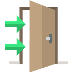

Referensi
PSB
Guru &
Pelajaran
Jadwal &
Kalender
Kesiswaan
Presensi
Penilaian
Kenaikan /Kelulusan
Mutasi
Laporan
Pengaturan
Your Name
Logout
 Proses PSB
Kelompok Calon Siswa
Pendataan Calon Siswa
Tahun Ajaran Angkatan Baru
Cari Calon Siswa
Statistik PSB
Penempatan Siswa Baru
Konfigurasi Pendataan PSB